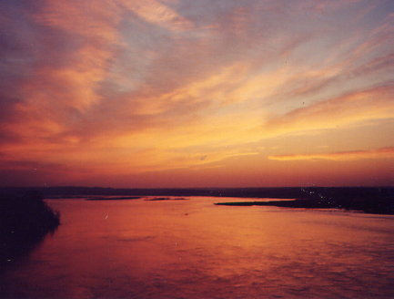
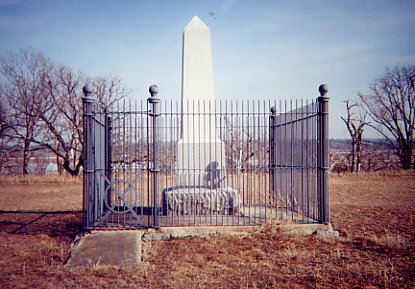
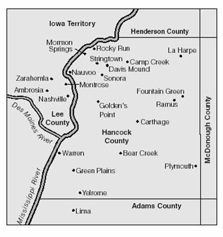
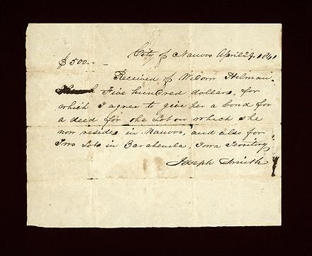

Settlements Outside of Map Area
Genoa, Nebraska
(Beaver Creek)

Genoa (Beaver Creek), Nebraska, was founded by Mormons as a stop on The Brigham Young Express and Carrying Company (Y X) in 1857. It was abandoned in 1859 when the town Genoa was given to the Pawnee for their reservation headquarters and the Mormons were forced to leave. This list of those who signed a petition and came from Jessica Lawson in Genoa, Nebraska. The Genoa Museum also has the original of Henry Hudson 's diary on display. (1)
Location of Genoa, Nebraska, map courtesy wikipedia.org
"The valiant group [of Mormons traveling to the Salt Lake Valley] made their way to the bank of the Platte River which would be their guide for the next 600 miles. The trail wasn't a narrow pathway in the same sense as a road. It was a corridor which might be a few dozen yards wide to several miles in width depending on the terrain. The oxen dictated the traveling speed and could only make about two miles an hour; slower than a man could walk. The Mormons eventually arrived at Beaver Creek south of Genoa. The stream was 20 feet wide and two feet deep. However, the west bank was very deep. A rope was hooked to the tongue of each wagon and 12 men hauled the wagons across one at a time. The Loup River posed another obstacle. The crossing site had sandbars, quicksand and a rapid current that reached waist-high in places. The river was 400 yards wide and split into two streams by a large sandbar in the middle. They had to unload the wagons and carry their goods across. The empty wagons were then pulled over by a rope. Once everything was loaded back in the wagons the company traveled south where they spent the weekend. This was the period that the Mormons passed the present site of Genoa.
"It was decided by some to locate in this area. Under the leadership of Henry and Sarah Hudson, founders of Genoa, a colony was set. The following is a description of Genoa from Henry Hudson's diary:
'The city of Genoa is about 102 miles from Florence (Omaha), contains about 400 acres, 10 acres to a block, 8 lots in a block, 18 rods long, 9 rods wide; the streets cross at right angles 4 rods wide. It has bluffs to the north gradually descending to the east, south and west. The ground is higher in the center of the public square and you have a view of the east some 20 miles. To the south the Loup fork can be seen with ever shifting sandbars, spotted with islands of cottonwoods, box elder, willow and some cedar; farther in the distance are the bluffs dividing the Loup and Platte Rivers.'
"Great haste was made to plow, plant, and fence their fields. More than 2000 acres were enclosed with ditches and a sod fence. The city of Genoa was settled by the Mormons in 1857 and was incorporated in 1884. Wagon ruts can still be seen carved into the prairie by the wheels of the travelers' caravan." (2)
Link to Information about Present-day Genoa
Notes:
- "Genoa, 1857-1859," Winter Quarters Project Archive, Brigham Young University.
- Genoa, Nebraska Historical Facts, "The Mormons," http://www.ci.genoa.ne.us/Hist.htm.
List of Community Residents (1857-1859)
Lamoni, Decatur County, Iowa

"Lamoni, 113 m. (1,126 alt., 1,739 pop.), was platted in 1879 as a colony for members of the Reorganized Church of Jesus Christ of Latter-day Saints [not to be confused with The Church of Jesus Christ of Latter-day Saints], who had come to Iowa from Missouri and Nauvoo, Ill. The founding was accomplished by the Order of Enoch, a corporation formed for the purpose of purchasing and developing lands for church settlements. The place was named for a 'righteous kin' recorded in the Book of Mormon.
"In 1881, the Herald, official church publication, was moved here from Plano, Ill.
Graceland College Image Source: http://www.rootsweb.com/~usgenweb/ia/ppcs-ia.html
"Graceland College (1895) makes Lamoni an educational center for the denomination, but the church offices have been removed to Independence, Mo. Fourteen college buildings, including several cottages, have been erected around the highest point of a 70-acre campus. A 300-acre tract of farm land, adjacent to the campus, provides employment for students, and supplies the kitchen with poultry and fresh dairy, garden, and orchard products. The institution . . . became a junior college in 1915; in 1923-24 the third year of instruction was added. Annual events include the presentation of some oratoria by the Graceland Oratorio Society.
"At 117 m. US 69 crosses the Missouri Line, 124 miles N. of Kansas City, Mo." (1)

Location of Lamoni, Iowa, map courtesy of wikipedia.org.
Link to Lamoni, Iowa RLDS Branch
Link to Information about the establishment of Lamoni, Iowa
Link to Information about Present-day Lamoni, Iowa
Notes:
- The State Historical Society of Iowa, Iowa: A Guide to the Hawkeye State, Compiled and Written by the Federal Writers' Project of the Works Progress Administration for the State of Iowa American Guide Series, Illustrated (New York: Viking Press, 1941), 393.
Lost Camp, Clarke County, Iowa
Location
Lost Camp is located “…exactly five miles south of Highway 34 at Osceola on Highway 69…about thirty miles east of Mt. Pisgah” (1).
“Lost Camp was located northwest of Garden Grove, six miles south of present‑day Osceola” (2).
“It was a branch of the church during 1846-1847”(3).
History
The inscription on the Mormon Trail Marker near Osceola, Iowa says, “In 1846, seven Mormon families became separated from the larger body of migrants. They stopped for the winter in present-day Green Bay Township, Clarke County, and established what was known as ‘Lost Camp’. These families remained in the area until 1854 when they resumed to the trek to Utah” (4).
“Six or seven comprising those of two Langwells and two Conyers and two or three others had stopped in the middle of Green Bay Township and settled down under the slope of a hill as if to avoid detection. A large body of Mormons had stopped at Garden Grove for the winter, but these few families had lost their way and settled at this location, which they appropriately named Lost Camp” (5).
Jonathan C. Wright left Kanesville in January or February of 1848 for a mission to the east. He went to Mt. Pisgah, Lost Camp, Chariton Point, Lone House, Soap Creek, and Iowaville (6).
Margaret Merrill gave birth to a son in the back of her family’s wagon. Albert, her husband, tried to keep up with the company, but after four miles, it became clear that his wife could not handle the jolts coming from the wagons. The company pressed on ahead and the Merrill family camped on the prairie. To complicate matters even more, Albert Merrill caught a fever and could do nothing to help himself or his family. When she tried to take care of her husband, Margaret came down with a cold and was no longer able to take care of her baby. This was the state Parley P. Pratt, who was on his way to Europe to serve a mission, found the Merrill family. He sent some men to drive their team to Garden, but instead the men took the Merrill family to a place called Lost Camp (7).
Residents
Albert Merrill, 7/17/1816; Margaret Ann Richison Merrill, 11/15/1816; Clarence Merrill, 5/18/1843; Franklin Merrill, 3/17/1843; Albert Merrill Jr., 10/10/1848; Margaret Merrill, 12/19/1850. It would appear that the Merrill family lived in Lost Camp until they continued their journey to the Salt Lake Valley. On June 7, 1852, the Merrill family, as members of the Thomas C.D. Howell Company departed for Utah. They arrived on September 2, 11-12, 27, 1852 (8).
John Conyer
James Longley
John Longley (9)
Samuel Kendall Gifford (10)
Notes:
- Kimball, Stanley B. The Mormon Trail Network in Iowa 1838-1863: A New Look. 422. Web. https://ojs.lib.byu.edu/spc/index.php/BYUStudies/article/viewFile/5232/4882
- http://www.crockettclan.org/pioneers/081846.html
- Kimball, 422.
- http://www.hmdb.org/marker.asp?marker=50023
- http://iagenweb.org/clarke/hisgrbay.html
- Hartley, William G. Latter-day Saints at Iowaville, Iowa: 1846-1851. 41. Web. http://files.lib.byu.edu/mormonmigration/articles/latterdaysaintsatiowavilleHartley.pdf
- http://www.crockettclan.org/pioneers/081846.html
- https://history.lds.org/overlandtravels/companyPioneers?lang=eng&companyId=161
- http://books.google.com/books?id=H4YUAAAAYAAJ&pg=PA459&lpg=PA459 &dq=%22lost+camp%22+iowa&source=bl&ots=GyKXdtn4On&sig=U5ufjCqG3 _moQ3eyoHtCPd8I5W4&hl=en&sa=X&ei=xbp6Uq3zN8GLjALn6oDICQ&ved =0CEkQ6AEwBA#v=onepage&q=%22lost%20camp%22&f=false
- http://www.huntsman-gifford.com/history/gifford/samuelk/samuelk.pdf
Pawnee Camp
Location of Genoa, Nebraska, map coutesy wikipedia.org
In 1844 James Emmett led a group West. He told the group he had been instructed by Joseph Smith, before the Prophet's death, to lead an advance party out of Nauvoo. The group dwindled in numbers because of various problems (see William Hartley's My Best for the Kingdom: History and Autobiography of John Lowe Butler for details ). Eventually a much smaller group wintered in 1845-46 at Ft. Vermillion in South Dakota. In the summer of 1846 the James Emmett Company was merged into George Miller 's Company. Most of the Emmett Company remained with Miller and went to Ponca. Lyman Hinman and Gardner Potter went with Jacob Gates to Pawnee Camp.
A few members of the Brigham Young, Heber C. Kimball, George Miller/James Emmett companies stayed at the Pawnee Station which is a few miles west of current day Genoa, Nebraska, instead of going to the Ponca Camp in current day Niobrara, Nebraska. They arrived in August of 1846 and were recalled to Winter Quarters, arriving there in October, 1846. This list came from the life of Fielding Garr (Fielding Garr, 1794-1855 and His Family: Early Pioneers on Antelope Island by A. M. Cutler.)
Babcock, Dolphas
Badger, Rodney (Young)
Casteel, Jacob
Dana, Lewis
Dolton, Charles
Garr, Fielding (Young)
Gates, Jacob (Young)
Hinman, Lyman
(Emmett) Mitchell, William
Newsom, Joseph
Potter, Gardner (Emmett)
Shepherd, Ransom (Young)
Shumway, Charles
Whitney, Ephraim
Ponca Camp

In 1844 James Emmett led a group West. He told the group he had been instructed by Joseph Smith, before the Prophet's death, to lead an advance party out of Nauvoo. The group dwindled in numbers because of various problems (see William Hartley's My Best for the Kingdom: History and Autobiography of John Lowe Butler for details ). Eventually a much smaller group wintered in 1845-46 at Ft. Vermillion in South Dakota. In the summer of 1846 the James Emmett Company was merged into George Miller 's Company. Most of the Emmett Company remained with Miller and went to Ponca. Lyman Hinman and Gardner Potter went with Jacob Gates to Pawnee Camp.
Niobrara sunrise, photograph courtesy Pamela C. Johnson: http://www.geocities.com/johnpame1/Yanktonbranch.html
Companies organized by Brigham Young, and Heber C. Kimball at the Cold Springs Camp likewise combined with Miller's Company and became the advance party for the Church. They were told to stop and find a place to winter. After considering their options, a High Council headed by George Miller voted to go north to winter with the Ponca (also commonly spelled as Punca, Puncaw, Punckaw, Puncah) Tribe on the Niobrara (Running Water, Swift Water) River. They arrived in August of'1846 left in April of 1847.
After arriving at the bluffs in 1847 according to Allen Russell: "We (the Punckaw Camp) settled on a little creek about 3 miles west of Winter Quarters, where the main body of the saints were located. Before we reached there, the Pioneers had started for the west with President Brigham Young, at their head. Punckaw Camp, or part of the camp, stopped there and raised our crops and some went to other places. We raised good crops of what little seed we had. In the summer, we cut hay for Winter, hauled logs and made log cabins to live in."

Monument to Mormon pioneers, Niobrara, Nebraska
Photography courtesy of Pamel C. Johnson: http://www.geocities.com/johnpame1/Yanktonbranch.html
The Ponca Camp was reportedly located near present-day Niobrara, Nebraska. Interestingly, the 1880 Johnson's History of Nebraska includes an entry for a town named Ponca which was the county seat of Dixon County. This present-day town is situated along the Missouri River and is 72.9 miles from Niobrara. It is thus assumed that the site of Ponca Camp was where another town of Ponca, Nebraska is currently situated in Knox County, only 4.8 miles from Niobrara.(1)
For interest's sake, an excerpt from the Johnson's History is included:
"PONCA,
"The County Seat [of Dixon County], is situated at the confluence of the west and south branches of Ayoway Creek, in the northeastern part of the County, and is at present the terminus of the Convington, Columbus and Black Hills Railroad. It derives its name from the Ponca Indians, who, in recent years, roamed over the hills and plains in this vicinity. Since the advent of the railroad, in 1877, the town has made wonderful improvement, and its business has more than doubled. Three years ago it was a village of three or four hundred inhabitants; to-day it has eight hundred, and is the largest and most flourishing town in this part of the State. It has two good weekly newspapers, the Courier and Journal, a commodious Court House, excellent school and Church advantages, and business houses representing the various lines of trade." (2)
For a history of the group that resided at Fr. Vermillion, South Dakota, near the Ponca Camp, which history also includes information about the Ponca Camp.
For an interactive map of the Ponca area (requires Flash player), see: http://www.nebraskastudies.org/0600/frameset_reset.html?http://www.nebraskastudies.org/0600/stories/0600_5000.html.
Notes:
- Information courtesy of Microsoft Streets and Trips 2005.
- Harrison Johnson, Johnson's History of Nebraska, by Harrison Johnson (Omaha: Henry Gibson, 1880), 331.
Zarahemla , Iowa

http://www.ldsces.org/inst_manuals/full/CESInstitute_ChurchHistory_Student_00__Complete_32502_eng.pdf
Zarahemla is within Lee County, Iowa and was founded by the Latter-Day Saints in the early 1840’s. The settlement was inspired by a revelation given to the Prophet Joseph Smith Jr. after Joseph’s visit in 1839 when he crossed the Mississippi River to look over the land West of Nauvoo. He said that a “town for Mormons should be developed just West of Montrose and given the name Zarahemla”(1). Almost a year later in March 1841 the Doctrine and Covenants 125:1-3 Revelation concerning Iowa reads:
1 What is the will of the Lord concerning the saints in the Territory of Iowa?
2 Verily, thus saith the Lord, I say unto you, if those who call themselves by my name and are essaying to be my saints, if they will do my will and keep my commandments concerning them, let them gather themselves together unto the places which I shall appoint unto them by my servant Joseph, and build up cities unto my name, that they may be prepared for that which is in store for a time to come.
3 Let them build up a city unto my name upon the land opposite the city of Nauvoo, and let the name of Zarahemla be named upon it.
The construction of Zarahemla was quickly accomplished after this revelation but the Saints stay was brief. George W. Gee surveyed the city under Joseph’s direction and in a short period of time an Iowa Stake was soon couched on the western side of the Mississippi River. There were over 300 members of the church settled in Zarahemla by August 7, 1841. Within the surrounding areas of Zarahemla, the Iowa Stake totaled around 750 members of the church (2). About 30 houses were built in Zarahemla but by 1846 the Saints deserted the area (3). In the end abandoning Zarahemla was to be a good thing because the Supreme Court ruled in favor of the land share holders of the Half-Breed Tract which deposed any person not mentioned therein, the Mormons (4). Persecution and the big push West aided in the build up and desertion of this town.
This site was one of the two stakes of The Church of Jesus Christ of Latter-Day Saints at the time (it is also one of the eleven pre-Utah Stakes). John Smith was called to be the Stake President over eight Branches. However, the Stake was dissolved into Branch status within 27 months of its inception (5). This could be due to the gathering to Nauvoo or the legal issues the Zarahemla Mormons faced with their neighbors.
Reactions to settlement revelations and calls to resettle can be seen in William Clayton’s diaries which speak of the conferences in relation to building up the Zarahemla ( Iowa) Stake.
8 April 1841, Thursday
Thursday. President Rigdon delivered a discourse on baptism for the dead, showing the propriety and absolute necessity of such an ordinance. After preaching a many were baptized for their dead relatives and many for the remission of sins. At this conference a Revelation was read (given January 19, 1841) containing instructions to build the temple boarding house called the Nauvoo house and many other important items. A short revelation was also read concerning the saints in Iowa. The question had been asked what is the will of the Lord concerning the saints in Iowa. It read to the following effect—Verily thus saith the Lord let all those my saints who are assaying to do my will gather themselves together upon the land opposite Nauvoo and build a city unto my name and let the name of Zarahemla be named upon it. And all who come from the East and West and North and South who have desires let them settle in Zarahemla that they may be prepared for that which is in store for a time to come and you have Haun’s Mill for a sample. Many of the brethren immediately made preparations for moving in here but not on account of its being so late in the season President John Smith advised to get through with planting and then proceed to move in (6).
Other experiences occurred in William Clayton’s life concerning Zarahemla and the settlement thereof as on August 30, 1841 Clayton was “advised by Brother Kimball to buy 2 city lots and move into the city of Zarahemla (according to a previous revelation) on the 30 th I went over to President John Smiths and bought two (7).”
Several church authorities visited the new town and various church issues were dealt with and discussed there. “Elders William Law and Hyrum Smith preached at Zarahemla” on May 2, 1841 (8). Little is mentioned of their words but this experience was significant enough to mention in the Clayton diaries. In August 1841 the Zarahemla Conference Elder George A. Smith began the meetings with the news of Elder Don C. Smith’s death (the Editor of the Times and Seasons). Elder John Taylor then addressed the members. Several men were called to be leaders in the wards and Stake, which was newly renamed the Zarahemla Stake: most notably Joseph Meacham, John Smith, William Clayton, and George W. Gee (9).
The bill below shows another purpose for Zarahemla which was to take care of those persons in need. Sara King Hillman at the age of 43 was a widow who struggled with her sons Ira and Silas. This deed for land in Iowa gave Sara the assurance of a place to stay and the security of land without payments. Whether there were many other cases like Sara or not it shows the generosity of Joseph Smith and the difference in the population of Zarahemla, wealthy and poor (10).

http://www.rickgrunder.com/OldNauvoo/oldnauvoo.htm
Amidst the many trials the Saints faced many miracles occurred in and near Zarahemla like the Miracle of the Quail; Healings of July 22, 1839; and the prophecy of the Rocky Mountains in connection with the Saints (11). Even though trials had brought them there miracles seemed to lighten their heavy loads.
Some hardships of the settlers can be seen in their diaries. William Clayton “struggled to farm, be the Branch Clerk, having poor health. Nieghbors helped out by building a fence around his crop but cows knocked it down. December 14, 1841 he returned to Nauvoo (12). Trails continually pushed the Saints away from the new settlement because they had the option of their old home in Nauvoo to fall back on. Without another Mormon settlement so close by the Saints may have made a better home out of Zarahemla than they did in the early 1840’s.
Zarahemla was a place of charity, leadership, obedience, trial, miracles, and prophecy. Many issues plagued the Saints therein and soon drove them back to Nauvoo and eventually to the Great Basin in Utah.
Notes:
- Baugh, Alexander. Historic Markers in Montrose and Keokuk; www.mormonhistoricsitesfoundation.org/publications/studies_fall2003/MHS_Fall2003_Markers.pdf, page 179.
- Uncle Dale’s Old Mormon Articles: Philadelphia Quaker Papers, http://www.sidneyrigdon.com/dbroadhu/PA/PQkr1800.htm
- Zarahemla, http://search.ldslibrary.com/article/view/2553808.
- Baugh, Alexander. Historic Markers in Montrose and Keokuk; www.mormonhistoricsitesfoundation.org/publications/studies_fall2003/MHS_Fall2003_Markers.pdf, page 181.
- Kimball, Stanley B., “Nauvoo West: The Mormons of the Iowa Shore,” BYU Studies 18 (Winter 1978): 132-142; Manuscript History of the Church in Iowa, Church Historical Department, Salt Lake City, Utah; ed. Watson, Eldon Jay, Manuscript History of Brigham Young: 1801-1844 (1968).
- Editor Allen, James B. and Thomas G. Alexander, Manchester Mormons : the journal of William Clayton, 1840 to 1842 (Salt Lake City: Peregrine Smith, 1974), page 208; http://www.boap.org/LDS/Early-Saints/clayton-diaries.
- Ibid, page 216.
- Ibid, page 212.
- Times and Seasons Volume 2, Number 22; http://www.centerplace.org/history/ts/v2n22.htm
- http://www.rickgrunder.com/OldNauvoo/oldnauvoo.htm
- Editor Garr, Arnold K., Donald Q. Cannon, Richard O. Cowan. Encyclopedia of Latter-day Saint History, Salt Lake City, Utah: Deseret Book Company, 2000, page 655-56.
- Editor Allen, James B. and Thomas G. Alexander, Manchester Mormons: the journal of William Clayton, 1840 to 1842 (Salt Lake City: Peregrine Smith, 1974), page 49.
List of Community Residents forthcoming